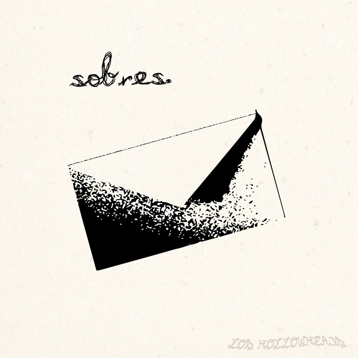
EP + peli · 2026
desde Puerto Vallarta, Jal.
Esta cabeza hueca está llena de emociones que explotan constantemente…
¿Surf punk? ¿Hard rock? No lo sabemos. Música bien prendida para bailar sin reglas, hecha de introspección, vivencias, diversión y rock and roll.
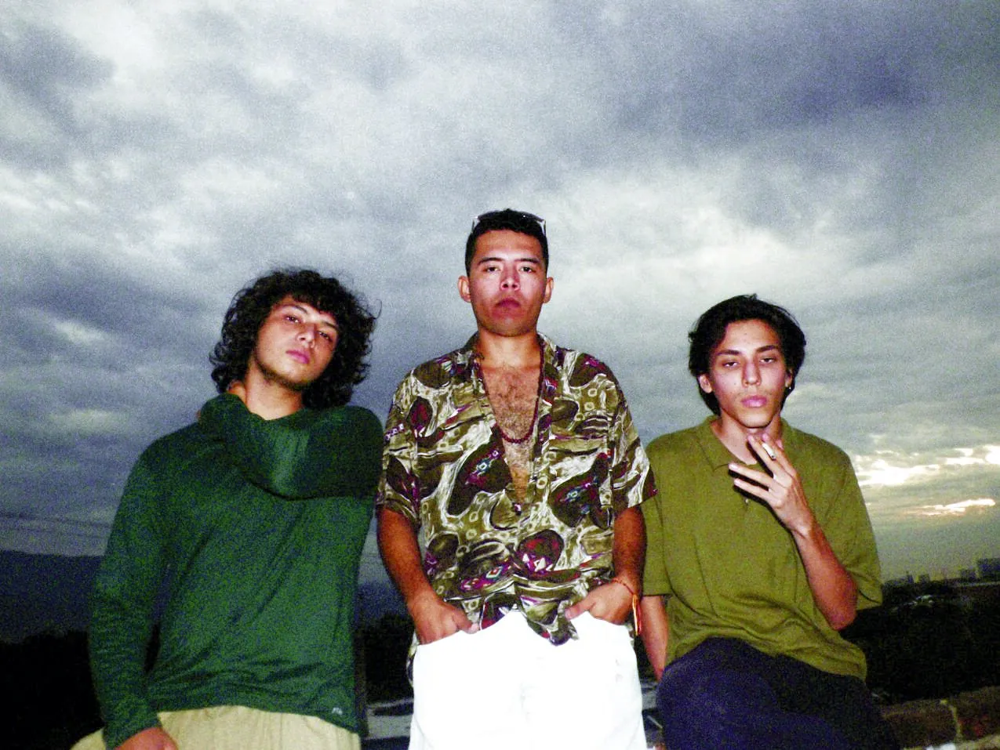
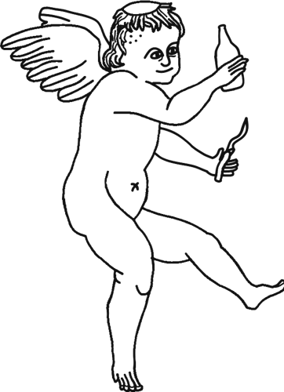
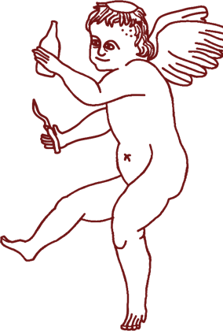
¡somos nosotros!
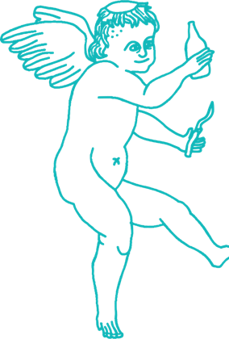
Lo nuevo ✉
EP + peli completa · 18 min
Gratis o con aportación voluntaria. Gracias por tu escucha, ya sabes que cuentas con tus amigos los HollowHeads.
“Les pedimos que luchen contra su hambre de dopamina y se tomen el tiempo de observar y escuchar cada pista…”
En vez de sacar un EP común, a estas canciones les creamos una pequeña historia para acompañarlas visualmente: el puerto retratado desde el punto de vista de unos artistas mundanos de la costa.
Todo lo que hemos sacado
todo grabado y producido en casa ✌

EP + peli · 2026
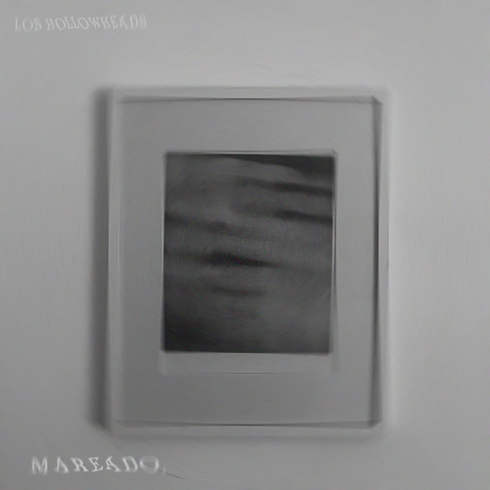
Sencillo · 2025
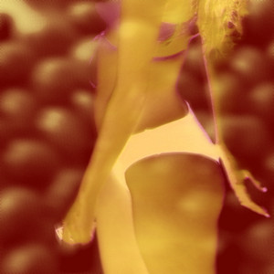
Sencillo · 2025
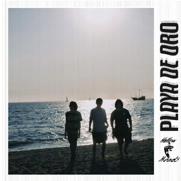
Sencillo · 2025
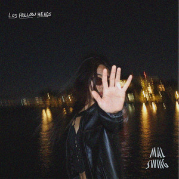
Sencillo · 2025
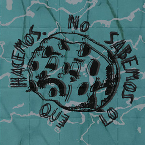
EP · 2023
Ctmperoconcariño · Palapunks · Maset-ass · Dos Puntos:c
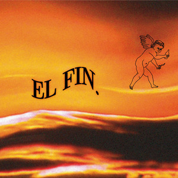
Sencillo · 2023
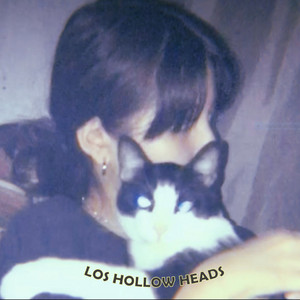
Sencillo · 2022
Sesiones en vivo
Una live sesión al aire libre en Vallarta, con cada rola subtitulada. Dale play a la sesión completa o escoge una canción.
dale clic a una rola ↓
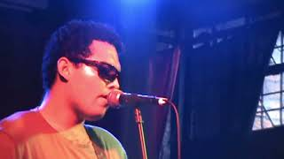
Mini blog: los HH por GDL (31 ago 2025)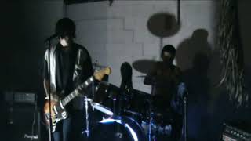
Ctmperoconcariño (video lírico)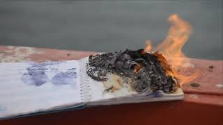
Palapunks (video lírico)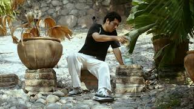
Maset-ass (video lírico)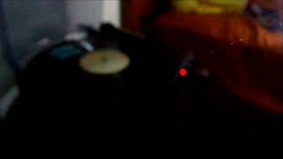
Dos Puntos:c (video lírico)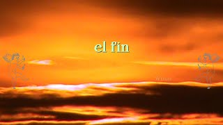
El Fin (video lírico)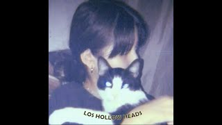
Algonotanbn (video lírico)Tres pilares
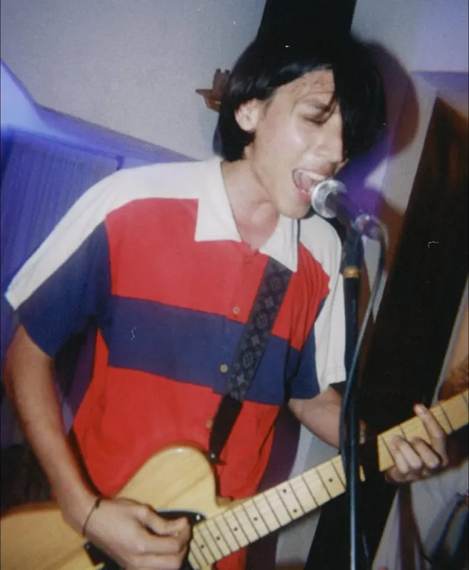
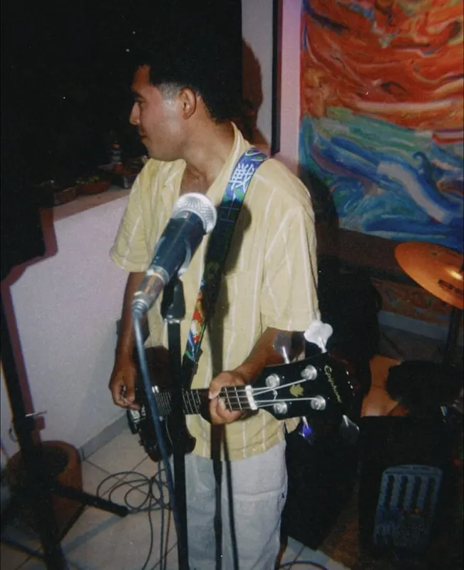
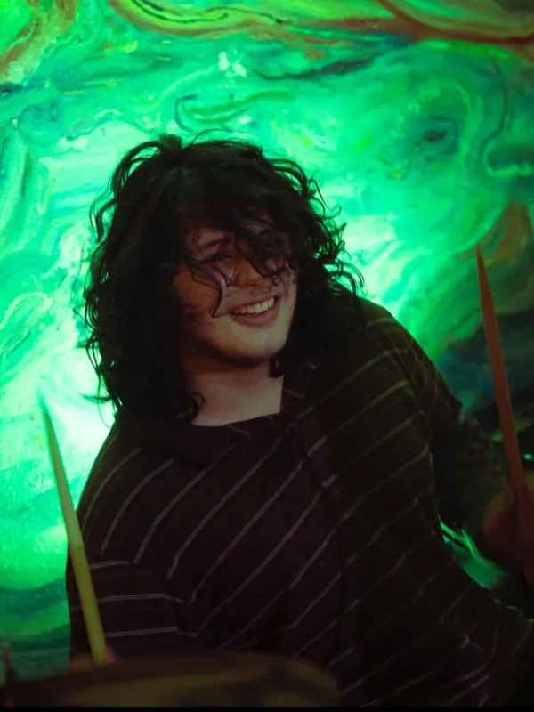
Los Hollowheads nacieron en 2020 como un hobbie: Zanate le propuso a Garabato armar una banda por diversión, Garabato empezó a traer canciones propias y el proyecto se fue haciendo en serio.
Estuvimos un rato en stand-by por cuestiones personales y porque no teníamos baterista. En 2023 arrancamos los shows como dúo, con Garabato y Zanate rolándose la batería y la guitarra según quién hubiera compuesto la canción. Hasta 2024, cuando nos robamos a Roni de una banda ajena y quedó la formación actual.
Hoy somos tres morros autosustentados: tocamos, componemos, grabamos y producimos toda nuestra música de manera independiente. Los Hollowheads le dan orden a ideas que no se pueden contar con palabras; aquí expresamos de forma enérgica y pura las emociones, vivencias y recuerdos de quienes formamos el proyecto.
Así nacen las rolas: los tabs de Teporocho y Pitillal, y la letra de El Fin, todo a mano.
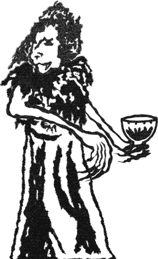
Patios, skate parks, bares y hasta el cerro. Ahora queremos llevar el ruido fuera de Vallarta.
Por anunciar. Síguenos en Instagram para no perderte el siguiente toquín.
¿Tienes un evento? Invítanos a tocar →
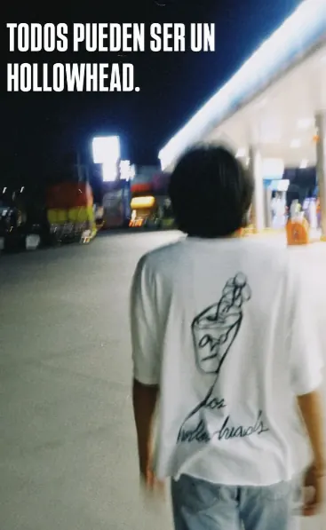
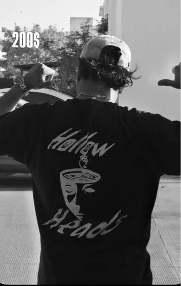
Merch
La playera oficial, con estampado al frente y atrás. En blanco o en negro, algodón suave.
$200 MXN
Pregunta por tallas disponibles y pídela por DM:
Pedir por InstagramBooking y prensa
Estamos buscando oportunidades fuera de Vallarta para conocer nuevos oyentes y contactos. Ninguno de nosotros tiene otra opción fuera de este proyecto: es todo o nada. Si lees esto y puedes brindarnos una oportunidad, no será desaprovechada.
De antemano, GRACIAS.
Atte: los HH.